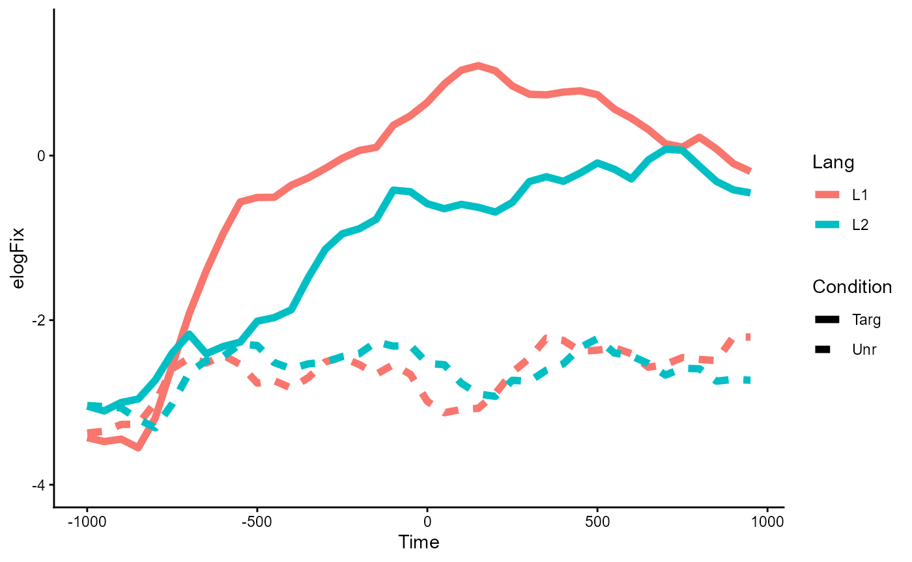
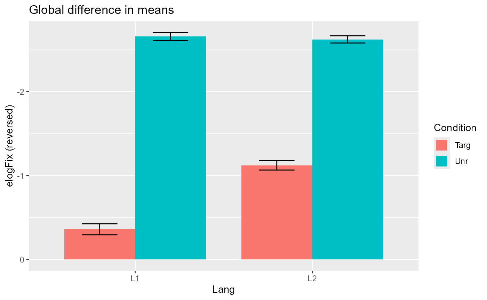
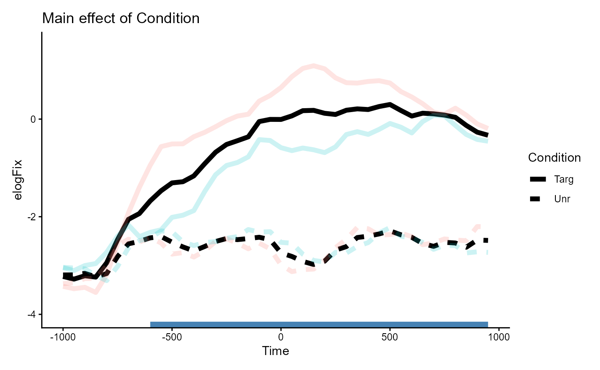
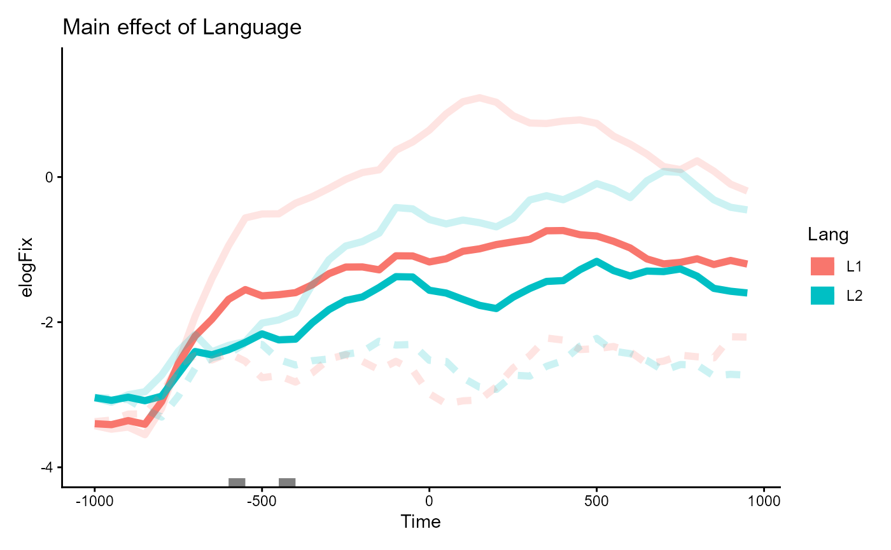
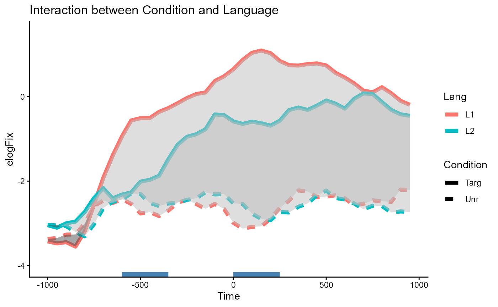

This tutorial is a guide on interpreting main effects and interaction effects in a CPA.
See more tutorials and vignettes on the Articles page.
Background
The data is from an eyetracking study by Ito, Pickering, & Corley (2018) “Investigating the time-course of phonological prediction in native and non-native speakers of English: A visual world eye-tracking study”. The data file comes by way of a CPA tutorial by Aine Ito, as part of a complement to a large survey paper on eyetracking data analysis methods (Ito & Knoeferle (2023).
library(jlmerclusterperm)
jlmerclusterperm_setup(verbose = FALSE)
# Other packages for this tutorial
library(dplyr)
library(tidyr)
library(ggplot2)
library(patchwork)
library(ggbraid) # remotes::install_github("nsgrantham/ggbraid")
# Download data (called `fix.50bin`)
local({
url <- "https://raw.githubusercontent.com/aineito/stats.VWP/main/data/fix.50bin.rda"
datafile <- tempfile()
download.file(url, datafile)
load(datafile, envir = globalenv())
})
glimpse(fix.50bin)
#> Rows: 28,680
#> Columns: 11
#> $ Subject <fct> j1, j1, j1, j1, j1, j1, j1, j1, j1, j1, j1, j1, j1, j1,…
#> $ Trial <dbl> 5, 5, 5, 5, 5, 5, 5, 5, 5, 5, 5, 5, 5, 5, 5, 5, 5, 5, 5…
#> $ Time <dbl> -1000, -950, -900, -850, -800, -750, -700, -650, -600, …
#> $ allSample <dbl> 25, 25, 25, 25, 25, 25, 25, 25, 25, 25, 25, 25, 25, 25,…
#> $ Count <dbl> 0, 0, 0, 0, 0, 0, 0, 0, 0, 0, 0, 0, 0, 0, 0, 0, 0, 0, 0…
#> $ BlinkCount <dbl> 0, 0, 0, 0, 0, 0, 0, 0, 0, 0, 0, 0, 0, 0, 0, 0, 0, 0, 0…
#> $ OffScreenCount <dbl> 0, 0, 0, 0, 0, 0, 0, 0, 0, 0, 0, 0, 0, 0, 0, 0, 0, 0, 0…
#> $ FixP <dbl> 0.0, 0.0, 0.0, 0.0, 0.0, 0.0, 0.0, 0.0, 0.0, 0.0, 0.0, …
#> $ Condition <fct> Targ, Targ, Targ, Targ, Targ, Targ, Targ, Targ, Targ, T…
#> $ Item <fct> 5, 5, 5, 5, 5, 5, 5, 5, 5, 5, 5, 5, 5, 5, 5, 5, 5, 5, 5…
#> $ Lang <fct> L2, L2, L2, L2, L2, L2, L2, L2, L2, L2, L2, L2, L2, L2,…The complete data dictionary is reproduced from the original tutorial in the collapsible details below:
Data dictionary of fix.50bin
| Column | Description |
|---|---|
| Subject | Subject ID |
| Trial | Trial number |
| Time | Time relative to the target word onset (Time -1000 contains 50 ms from the time -1000 ms) |
| allSample | The sum of all samples in the corresponding time bin |
| Count | Right-eye sample count on the critical object |
| BlinkCount | The total number of right-eye samples that were in a blink event |
| OffScreenCount | The total number of right-eye samples that fall outside of the display boundary (off screen) |
| FixP | Fixation proportion |
| Condition | Condition (Targ=target, Eng=English competitor, Jap=Japanese competitor, Unr=unrelated) |
| Item | Item ID |
| Lang | Language group (L1=native English speakers, L2=native Japanese, non-native English speakers) |
For the purposes of this vignette, we take a subset of the data to
focus on just the effects of interest. We first derive the response
variable used in the original tutorial elogFix for the
“empirical logit” (Barr, 2013; but see
Donnelly &
Verkuilen, 2017) and then also subset the levels of
Condition (target "Targ" vs. unrelated
"Unr") and Lang (native "L1"
vs. non-native "L2" speakers) for a 2-by-2 analysis.
fix_50bin <- fix.50bin %>%
as_tibble() %>%
mutate(
elogFix = log((Count+.5)/
(allSample-BlinkCount-OffScreenCount-Count+.5))
) %>%
select(elogFix, Condition, Lang, Time, Subject, Item) %>%
filter(Lang %in% c("L1", "L2"), Condition %in% c("Targ", "Unr")) %>%
droplevels()
fix_50bin
#> # A tibble: 14,360 × 6
#> elogFix Condition Lang Time Subject Item
#> <dbl> <fct> <fct> <dbl> <fct> <fct>
#> 1 -3.93 Targ L2 -1000 j1 5
#> 2 -3.93 Targ L2 -950 j1 5
#> 3 -3.93 Targ L2 -900 j1 5
#> 4 -3.93 Targ L2 -850 j1 5
#> 5 -3.93 Targ L2 -800 j1 5
#> 6 -3.93 Targ L2 -750 j1 5
#> 7 -3.93 Targ L2 -700 j1 5
#> 8 -3.93 Targ L2 -650 j1 5
#> 9 -3.93 Targ L2 -600 j1 5
#> 10 -3.93 Targ L2 -550 j1 5
#> # ℹ 14,350 more rowsNote that the original
tutorial conducted two separate CPAs, testing for the effect of
Condition within the Lang=="L1" group and
within the Lang=="L2" group. By comparison,
jlmerclusterperm allows us to estimate the main effects
of both predictors simultaneously, as well as an interaction effect
between the two.
The fix_50bin data prepared for this complete 2-by-2
analysis is plotted below:
p_base <- fix_50bin %>%
ggplot(aes(Time, elogFix, color = Lang, linetype = Condition)) +
stat_summary(geom = "line", linewidth = 2, fun.data = mean_se) +
coord_cartesian(ylim = c(-4, 1.5)) +
theme_classic()
p_base
Contrast coding and CPA specification
Prior to the CPA, we first apply sum coding to the predictors, to render the terms in the model matrix orthogonal to each other. This is important because it allows the model to estimate the main and interaction effects in the 2-by-2 without losing statistical power.
contrasts(fix_50bin$Condition) <- contr.sum(2)
contrasts(fix_50bin$Condition)
#> [,1]
#> Targ 1
#> Unr -1Using this data, we construct a specification object with
make_jlmer_spec() using the formula
elogFix ~ Condition * Lang. We also include random
intercepts by Subject and Item as in the
original tutorial. Lastly, we specify the grouping structure of
observations in the data, where each row is uniquely identified by a
combination of Subject, Item, and
Time.
spec <- make_jlmer_spec(
elogFix ~ Condition * Lang + (1 | Subject) + (1 | Item),
data = fix_50bin,
subject = "Subject", trial = "Item", time = "Time"
)As a sanity check, we first fit a global model collapsing the time dimension.
jlmer(spec)
#> <Julia object of type LinearMixedModel>
#> Variance components:
#> Column Variance Std.Dev.
#> Subject (Intercept) 0.668899 0.817862
#> Item (Intercept) 0.091145 0.301902
#> Residual 9.481388 3.079186
#> ──────────────────────────────────────────────────────────
#> Coef. Std. Error z Pr(>|z|)
#> ──────────────────────────────────────────────────────────
#> (Intercept) -1.66888 0.142614 -11.70 <1e-30
#> Condition1 0.946573 0.025939 36.49 <1e-99
#> Lang1 0.208792 0.12097 1.73 0.0844
#> Condition1__Lang1 0.194132 0.025939 7.48 <1e-13
#> ──────────────────────────────────────────────────────────The original tutorial hypothesized a main effect of
Condition, but no meaningful differences by
Lang (hence the simpler split analysis). The plot and the
model results from above corroborate this as well.
However, notice that there also seems to be a potential interaction
effect, where the difference in the effect of Condition
appears larger within the Lang=="L1" group than within the
Lang=="L2" group, at least in the aggregate:
Plotting code
fix_50bin %>%
ggplot(aes(Lang, elogFix, fill = Condition)) +
stat_summary(
geom = "bar",
position = position_dodge(),
width = .8,
linewidth = 2,
fun.data = mean_se
) +
stat_summary(
geom = "errorbar",
position = position_dodge(width = .8),
width = .4,
fun.data = mean_se
) +
labs(title = "Global difference in means", y = "elogFix (reversed)") +
scale_y_reverse()
Supposing that this relationship is theoretically interesting, we can
use CPA to test for this interaction effect between
Condition and Lang, as well as the main effect
of Condition.
Conducting the CPA
To stick close to the analysis performed in the original tutorial
(via {permutes}), we conduct a CPA using
statistic = "chisq" and threshold = 0.05. This
makes the CPA use the difference in likelihood as the timewise
statistic, counting only those differences that come out as p<0.05 in
a likelihood ratio (i.e., chi-squared) test.
set_rng_state(123L)
system.time({
CPA <- clusterpermute(
spec,
statistic = "chisq",
threshold = 0.05,
nsim = 1000L,
progress = FALSE
)
})
#> user system elapsed
#> 0.24 0.37 97.83
See full summary of results from CPA
CPA
#> $null_cluster_dists
#> ── Null cluster-mass distribution (chisq p < 0.05) ───── <null_cluster_dists> ──
#> Condition (n = 1000, df = 1)
#> Mean (SD): 1.072 (15.89)
#> Coverage intervals: 95% [-33.885, 40.086]
#> Lang (n = 1000, df = 1)
#> Mean (SD): 1.713 (20.98)
#> Coverage intervals: 95% [-38.864, 53.217]
#> Condition:Lang (n = 1000, df = 1)
#> Mean (SD): 1.471 (15.87)
#> Coverage intervals: 95% [-29.499, 38.622]
#> ────────────────────────────────────────────────────────────────────────────────
#>
#> $empirical_clusters
#> ── Empirical clusters (chisq p < 0.05) ───────────────── <empirical_clusters> ──
#> Condition (df = 1)
#> [-600, 950]: 1614.328 (p=0.0010)
#> Lang (df = 1)
#> [-600, -550]: 10.024 (p=0.2977)
#> [-450, -400]: 8.826 (p=0.3506)
#> Condition:Lang (df = 1)
#> [-600, -350]: 40.580 (p=0.0380)
#> [0, 250]: 47.066 (p=0.0270)
#> ────────────────────────────────────────────────────────────────────────────────The clusters detected from the 1,000-simulation run are shown below:
CPA$empirical_clusters
#> ── Empirical clusters (chisq p < 0.05) ───────────────── <empirical_clusters> ──
#> Condition (df = 1)
#> [-600, 950]: 1614.328 (p=0.0010)
#> Lang (df = 1)
#> [-600, -550]: 10.024 (p=0.2977)
#> [-450, -400]: 8.826 (p=0.3506)
#> Condition:Lang (df = 1)
#> [-600, -350]: 40.580 (p=0.0380)
#> [0, 250]: 47.066 (p=0.0270)
#> ────────────────────────────────────────────────────────────────────────────────We note that:
For
Condition, the CPA detects one large cluster spanning [-600, 950] which comes out as significant.For
Lang, the CPA detects two small, non-significant clusters: [-600, -550] and [-450, -400]. Note that both clusters span across just two time bins (given the 50ms binning of the data).For
Conditino:Lang, the CPA detects two significant clusters spanning [-600, -350] and [0, 250].
In the following sections we recruit some visual aids to help guide our interpretation of what exactly the results of the CPA mean in the context of the data.
Interpreting the effects from the CPA
As a reminder, here is what the shape of the data looks like in the 2-by-2 design:
p_baseSee the code in the collapsible details if you want to follow along and reproduce the plots.
Some setup for the plotting code
# Data frame of detected clusters to annotate on the plots
clusters <- tidy(CPA$empirical_clusters) %>%
mutate(color = ifelse(pvalue < 0.05, "steelblue", "grey50"))
# Transparent version of `p_base` to overlay with the effect-plots below
p_bg <- p_base +
scale_color_manual(values = alpha(scales::hue_pal()(2), .2)) +
theme_void() +
theme(legend.position = "none")Main effect of Condition
Given our prior sum coding, the main effect of Condition
estimates the difference in means between Condition=="Targ"
vs. Condition="Unr". These were differentiated by line type
(solid vs. dashed) in the plot of the data.
One way to visualize this effect is to take the average of the solid
lines and the average of the dashed lines. This shows the difference in
elogFix that is solely on the basis of
Condition.
Code to plot the Condition main effect
p_cond <- fix_50bin %>%
ggplot(aes(Time, elogFix, linetype = Condition)) +
stat_summary(geom = "line", linewidth = 2, fun.data = mean_se) +
geom_segment(
aes(x = start, xend = end, y = I(0), color = I(color)),
linewidth = 5,
inherit.aes = FALSE,
data = clusters %>%
filter(predictor == "Condition")
) +
labs(title = "Main effect of Condition") +
coord_cartesian(ylim = c(-4, 1.5)) +
theme_classic()
p_cond +
inset_element(p_bg, 0, 0, 1, 1, align_to = "panel")
The one large cluster detected in the CPA (annotated in blue at the
bottom) is consistent with the difference between the
Condition lines we see in the plot: the two lines start out
similar but diverge early on, and the large gap between the two is
sustained throughout. This corresponds to the significant cluster
spanning [-600, 950].
CPA$empirical_clusters
#> ── Empirical clusters (chisq p < 0.05) ───────────────── <empirical_clusters> ──
#> Condition (df = 1)
#> [-600, 950]: 1614.328 (p=0.0010)
#> Lang (df = 1)
#> [-600, -550]: 10.024 (p=0.2977)
#> [-450, -400]: 8.826 (p=0.3506)
#> Condition:Lang (df = 1)
#> [-600, -350]: 40.580 (p=0.0380)
#> [0, 250]: 47.066 (p=0.0270)
#> ────────────────────────────────────────────────────────────────────────────────Main effect of Lang
Similarly, the main effect of Lang estimates the
difference in means between Lang=="L1"
vs. Lang="L2". These were differentiated by line color (red
vs. blue) in the plot of the data.
One way to visualize this effect is to take the average of the red
lines and the average of the blue lines. This shows the difference in
elogFix that is solely on the basis of
Lang.
Code to plot the Lang main effect
p_lang <- fix_50bin %>%
ggplot(aes(Time, elogFix, color = Lang)) +
stat_summary(geom = "line", linewidth = 2, fun.data = mean_se) +
geom_segment(
aes(x = start, xend = end, y = I(0), color = I(color)),
linewidth = 5,
inherit.aes = FALSE,
data = clusters %>%
filter(predictor == "Lang")
) +
labs(title = "Main effect of Language") +
coord_cartesian(ylim = c(-4, 1.5)) +
theme_classic()
p_lang +
inset_element(p_bg, 0, 0, 1, 1, align_to = "panel")
Two small clusters are annotated in grey around the -500ms mark. From eye-balling the plot, the clusters appear over regions where the two lines diverge slightly more than in other places along the time dimension, but they don’t seem to point out a meaningful pattern of difference. These correspond to the two non-significant clusters spanning [-600, -550] and [-450, -400].
CPA$empirical_clusters
#> ── Empirical clusters (chisq p < 0.05) ───────────────── <empirical_clusters> ──
#> Condition (df = 1)
#> [-600, 950]: 1614.328 (p=0.0010)
#> Lang (df = 1)
#> [-600, -550]: 10.024 (p=0.2977)
#> [-450, -400]: 8.826 (p=0.3506)
#> Condition:Lang (df = 1)
#> [-600, -350]: 40.580 (p=0.0380)
#> [0, 250]: 47.066 (p=0.0270)
#> ────────────────────────────────────────────────────────────────────────────────As an aside, you may have noticed in the plot that there’s actually an even larger divergence between lines around the 200ms mark, where the blue line for L2 speakers noticeably dip. Part of the reason why this is not detected as a cluster is because the difference at that region is not robust after accounting for variability due to the the random effects. See the collapsible details below for a proof.
Clusters identified using fixed-effect models
A less sensitive CPA using fixed-effect models will actually pick out
that numerically larger difference between the Lang lines,
over the region [100, 350].
spec_lm <- make_jlmer_spec(
elogFix ~ Condition * Lang,
data = fix_50bin,
subject = "Subject", trial = "Item", time = "Time"
)
timewise_lm <- compute_timewise_statistics(spec_lm, statistic = "chisq")
extract_empirical_clusters(timewise_lm, threshold = 0.05)
#> ── Empirical clusters (chisq p < 0.05) ───────────────── <empirical_clusters> ──
#> Condition (df = 1)
#> [-600, 950]: 1475.084
#> Lang (df = 1)
#> [-600, -550]: 9.014
#> [100, 350]: 29.469
#> Condition:Lang (df = 1)
#> [-600, -350]: 37.925
#> [0, 200]: 39.343
#> ────────────────────────────────────────────────────────────────────────────────To assess what’s going on, we can zoom in and fit models on the data over that region.
fix_50bin_100_350 <- fix_50bin %>%
filter(between(Time, 100, 350))
spec_lm_100_350 <- make_jlmer_spec(
elogFix ~ Condition * Lang,
data = fix_50bin_100_350,
subject = "Subject", trial = "Item", time = "Time"
)
lm_100_350 <- jlmer(spec_lm_100_350)
spec_lmer_100_350 <- make_jlmer_spec(
elogFix ~ Condition * Lang + (1 | Subject) + (1 | Item),
data = fix_50bin_100_350,
subject = "Subject", trial = "Item", time = "Time"
)
lmer_100_350 <- jlmer(spec_lmer_100_350)As expected, there’s a much larger standard error for
Lang in the mixed model compared to the fixed model:
bind_rows(
lm = tidy(lm_100_350),
lmer = tidy(lmer_100_350),
.id = "model"
) %>%
filter(term == "Lang1") %>%
select(model:statistic)
#> # A tibble: 2 × 5
#> model term estimate std.error statistic
#> <chr> <chr> <dbl> <dbl> <dbl>
#> 1 lm Lang1 0.369 0.0686 5.38
#> 2 lmer Lang1 0.358 0.202 1.77The estimates on the coefficient are otherwise similar, so the random
effects must be soaking up some of the variation that the fixed model is
(unwittingly) attributing to the effect of Lang. (Or if
you’d prefer it said the other way, the random effects must be
preventing the fixed effect from soaking up the residual variation).
Indeed, beyond the shared estimate for the residual standard deviation of around 3, the mixed model is additionally attributes a large effect of 1.3 for by-subject intercepts.
tidy(lmer_100_350, effects = "ran_pars") %>%
mutate(model = "lmer", .before = 1L) %>%
add_row(
model = "lm",
group = "Residual",
term = "sd__Observation",
estimate = glance(lm_100_350)$sigma
)
#> # A tibble: 4 × 4
#> model group term estimate
#> <chr> <chr> <chr> <dbl>
#> 1 lmer Subject sd__(Intercept) 1.33
#> 2 lmer Item sd__(Intercept) 0.459
#> 3 lmer Residual sd__Observation 2.84
#> 4 lm Residual sd__Observation 3.18As a last sanity check, we compare goodness-of-fit and err on the side of mixed models:
Interaction effect of Condition:Lang
The interaction effect can be slightly trickier to interpret, but one
intuitive way to think about it here is: “Does Condition
show different effects between the Lang=="L1" group and the
Lang=="L2" group?”. You could also frame this the other way
around as “Is the effect of Lang different between
Condition groups?”, but the original framing makes more
sense in the context of the study.
One way to visualize this is to first plot the difference between
lines as shaded areas. Then, we can inspect whether the area of
difference within the Lang=="L1" group is larger/smaller
than the area of difference within the Lang=="L2"
group.
Code to plot the Condition:Lang interaction effect
# For drawing areas
braid_layer <- function(Lang_group = c("L1", "L2")) {
Lang_group <- match.arg(Lang_group)
geom_braid(
aes(Time, ymin = Unr, ymax = Targ,
fill = ifelse(Targ > Unr, "grey", "grey30")),
alpha = .5,
method = "line",
inherit.aes = FALSE,
data = fix_50bin %>%
pivot_wider(
id_cols = c(Lang, Time),
names_from = "Condition",
values_from = "elogFix",
values_fn = mean
) %>%
filter(Lang == .env$Lang_group)
)
}
p_interaction <- fix_50bin %>%
ggplot(aes(Time, elogFix, color = Lang, linetype = Condition)) +
stat_summary(geom = "line", linewidth = 2, fun.data = mean_se) +
braid_layer("L1") +
braid_layer("L2") +
geom_segment(
aes(x = start, xend = end, y = I(0)),
linewidth = 5,
color = "steelblue",
inherit.aes = FALSE,
data = clusters %>%
filter(predictor == "Condition:Lang")
) +
labs(title = "Interaction between Condition and Language") +
scale_fill_identity() +
coord_cartesian(ylim = c(-4, 1.5)) +
theme_classic()
p_interaction
Overall, we see a larger effect of Condition materialize
within Lang=="L1" (area between red lines) than within
Lang=="L2" (area between blue lines). The two clusters for
the interaction effect are detected over the regions where this
difference in area is the most pronounced. These correspond to the two
significant clusters spanning [-600, -350] and [0, 250].
CPA$empirical_clusters
#> ── Empirical clusters (chisq p < 0.05) ───────────────── <empirical_clusters> ──
#> Condition (df = 1)
#> [-600, 950]: 1614.328 (p=0.0010)
#> Lang (df = 1)
#> [-600, -550]: 10.024 (p=0.2977)
#> [-450, -400]: 8.826 (p=0.3506)
#> Condition:Lang (df = 1)
#> [-600, -350]: 40.580 (p=0.0380)
#> [0, 250]: 47.066 (p=0.0270)
#> ────────────────────────────────────────────────────────────────────────────────Comparison to a split approach
At the beginning of this tutorial we discussed an alternative
approach of splitting the data by one factor and then testing the effect
of the other factor within each level of the first factor. In this
section we replicate this approach from the original tutorial for this
dataset, where the effect of Condition was tested
separately for each group of Lang.
We first split the data by Lang and construct a
specification object for each. Note that Condition is now
the sole predictor in the formulae.
spec_L1 <- make_jlmer_spec(
elogFix ~ Condition + (1 | Subject) + (1 | Item),
data = fix_50bin %>%
filter(Lang == "L1"),
subject = "Subject", trial = "Item", time = "Time"
)
spec_L2 <- make_jlmer_spec(
elogFix ~ Condition + (1 | Subject) + (1 | Item),
data = fix_50bin %>%
filter(Lang == "L2"),
subject = "Subject", trial = "Item", time = "Time"
)Then, we conduct a CPA for each, using the same
clusterpermute() syntax.
set_rng_state(123L)
system.time({
CPA_L1 <- clusterpermute(
spec_L1,
statistic = "chisq",
threshold = 0.05,
nsim = 1000L,
progress = FALSE
)
})
#> user system elapsed
#> 0.12 0.11 25.35
set_rng_state(123L)
system.time({
CPA_L2 <- clusterpermute(
spec_L2,
statistic = "chisq",
threshold = 0.05,
nsim = 1000L,
progress = FALSE
)
})
#> user system elapsed
#> 0.08 0.11 19.11Finally we inspect the result of the CPA on the splits:
For the L1 group, we detect one significant cluster spanning [-650,
950], which has the same range as the cluster detected for the
Condition main effect in the combined CPA.
CPA_L1$empirical_clusters
#> ── Empirical clusters (chisq p < 0.05) ───────────────── <empirical_clusters> ──
#> Condition (df = 1)
#> [-650, 950]: 1031.778 (p=0.0010)
#> ────────────────────────────────────────────────────────────────────────────────For the L2 group, we again detect one significant cluster but now spanning a slightly shorter range of [-350, 950].
CPA_L2$empirical_clusters
#> ── Empirical clusters (chisq p < 0.05) ───────────────── <empirical_clusters> ──
#> Condition (df = 1)
#> [-350, 950]: 620.678 (p=0.0010)
#> ────────────────────────────────────────────────────────────────────────────────It is important to note that within this split analysis, we cannot
compare the Condition effect across Lang
groups. This is not just on the basis of such a comparison being a
post-hoc test, thus carrying less weight as a piece of evidence.
Instead, there is a more fundamental problem in the fact that the
magnitude of the effect (i.e., the cluster-mass statistic) is an
abstraction over the shape of the data (and permutations of the data) as
a time series, which cannot be recovered post-hoc.
More simply put, given the cluster-mass of 1032 over [-650, 950] for native speakers and the cluster-mass of 621 over [-350, 950] for non-native speakers, we cannot conclude a difference in cluster-mass of 411 over the non-intersecting region [-650, -350].
Here, we already know that this isn’t the case: the complete 2-by-2 CPA from above detected significant clusters for the interaction effect at [-600, -350] and [0, 250], each with a smaller cluster-mass. Thus, we can only get an estimate this effect if the comparison is specified at the start and baked into the CPA procedure itself (here, in the form of an interaction term, with the appropriate contrast coding schemes).
Lastly, as also noted elsewhere on the package website, be careful of making statements about the timecourse of an effect from a CPA (Sassenhagen & Draschkow, 2019).